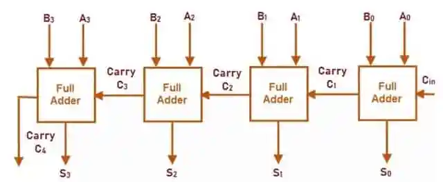
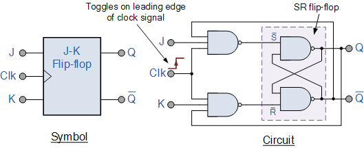
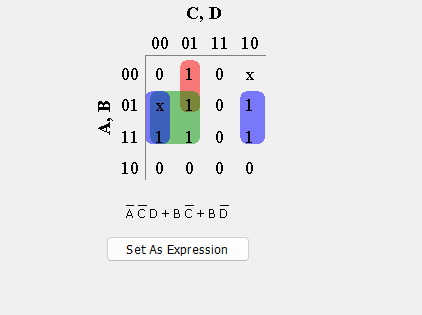
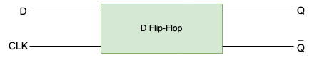
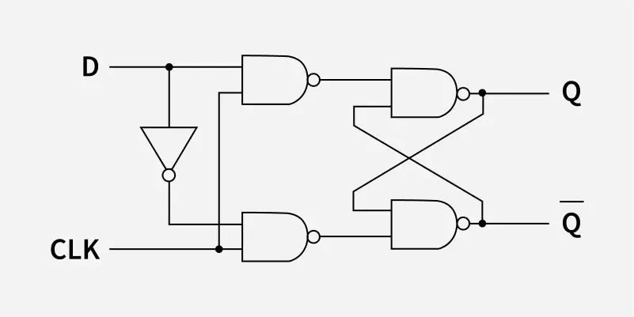
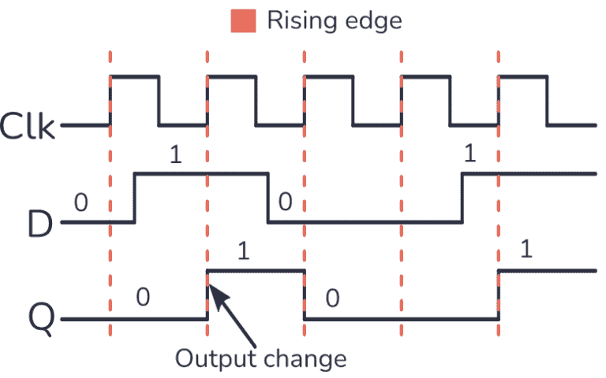
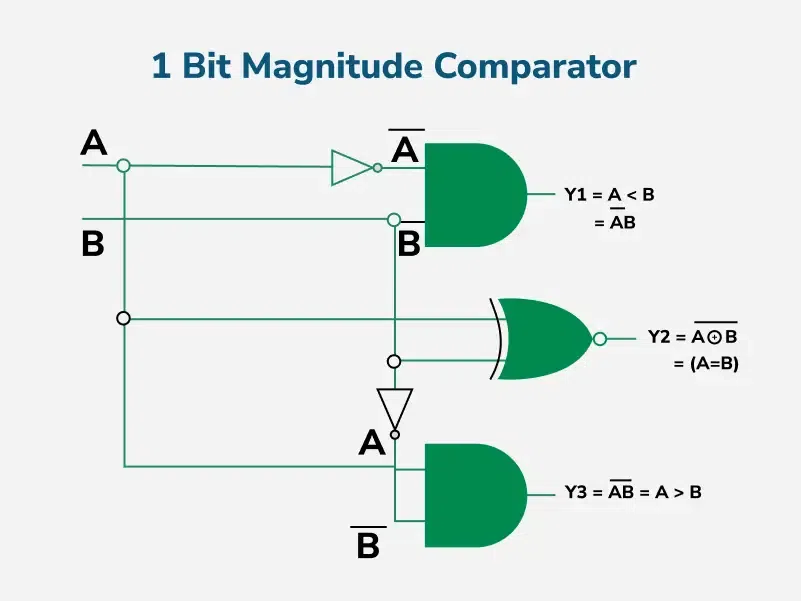
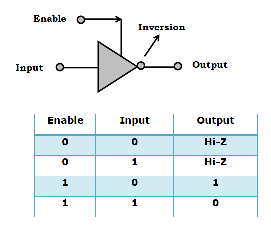
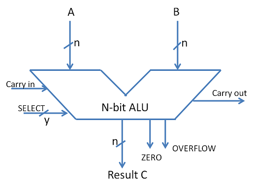

Digital Fundamentals - Detailed Q&A
Comprehensive Answers for 4-Mark Question Themes
4-Mark Question Themes
Detailed explanations for frequently encountered 4-mark question themes. Illustrative frequencies and example paper mentions (S=Summer, W=Winter) are based on analysis of the provided syllabus and past papers.
1. State and prove De-Morgan's theorems using truth-tables.
(Illustrative Frequency: ~5, Example Papers: S2024, W2024, W2023, W2020, W2019)
De Morgan's theorems are two fundamental rules in Boolean algebra that provide a method for negating Boolean expressions involving AND (product) and OR (sum) operations. They are crucial for simplifying logic expressions and for converting between different forms of logic gate implementations (e.g., from AND/OR logic to purely NAND or purely NOR logic).
Theorem 1: The complement of a product of variables is equal to the sum of their individual complements.
Symbolically, for two variables A and B, this is expressed as:
(A ⋅ B)' = A' + B'
This means "NOT (A AND B) is equivalent to (NOT A) OR (NOT B)".
Proof using Truth Table:
To prove this theorem, we construct a truth table that evaluates both the Left-Hand Side (LHS) and the Right-Hand Side (RHS) of the equation for all possible combinations of inputs A and B.
| A | B | A ⋅ B | (A ⋅ B)' (LHS) | A' | B' | A' + B' (RHS) |
|---|---|---|---|---|---|---|
| 0 | 0 | 0 | 1 | 1 | 1 | 1 |
| 0 | 1 | 0 | 1 | 1 | 0 | 1 |
| 1 | 0 | 0 | 1 | 0 | 1 | 1 |
| 1 | 1 | 1 | 0 | 0 | 0 | 0 |
As the column for (A ⋅ B)' (LHS) is identical to the column for A' + B' (RHS) for all possible input values, De Morgan's First Theorem is proven.
Theorem 2: The complement of a sum of variables is equal to the product of their individual complements.
Symbolically, for two variables A and B, this is expressed as:
(A + B)' = A' ⋅ B'
This means "NOT (A OR B) is equivalent to (NOT A) AND (NOT B)".
Proof using Truth Table:
Similarly, we construct a truth table evaluating both sides of this equation.
| A | B | A + B | (A + B)' (LHS) | A' | B' | A' ⋅ B' (RHS) |
|---|---|---|---|---|---|---|
| 0 | 0 | 0 | 1 | 1 | 1 | 1 |
| 0 | 1 | 1 | 0 | 1 | 0 | 0 |
| 1 | 0 | 1 | 0 | 0 | 1 | 0 |
| 1 | 1 | 1 | 0 | 0 | 0 | 0 |
As the column for (A + B)' (LHS) is identical to the column for A' ⋅ B' (RHS) for all possible input values, De Morgan's Second Theorem is proven.
These theorems can be extended to more than two variables. For example: (A ⋅ B ⋅ C)' = A' + B' + C' and (A + B + C)' = A' ⋅ B' ⋅ C'.
2. Convert a given decimal Number to base 4 and base 8 (e.g., 330.5).
(Illustrative Frequency: ~3, Example Papers: S2024, W2023, S2022 (similar))
To convert a decimal number that includes both an integer and a fractional part to another base (like base 4 or base 8), we perform the conversion for the integer and fractional parts separately and then combine them.
Example: Convert Decimal (330.5)10 to Base 4 and Base 8.
Part 1: Conversion of the Integer Part (330)10
Conversion to Base 4 (Quaternary): We use the method of repeated division by the new base (4), recording the remainders at each step. The remainders, read in reverse order of their calculation (from bottom to top), form the digits of the number in the new base.
- 330 ÷ 4 = 82 with a remainder of 2 (This is the Least Significant Digit - LSD)
- 82 ÷ 4 = 20 with a remainder of 2
- 20 ÷ 4 = 5 with a remainder of 0
- 5 ÷ 4 = 1 with a remainder of 1
- 1 ÷ 4 = 0 with a remainder of 1 (This is the Most Significant Digit - MSD)
Reading the remainders from bottom up (MSD to LSD): (330)10 = (11022)4.
Conversion to Base 8 (Octal): We use the method of repeated division by the new base (8).
- 330 ÷ 8 = 41 with a remainder of 2 (LSD)
- 41 ÷ 8 = 5 with a remainder of 1
- 5 ÷ 8 = 0 with a remainder of 5 (MSD)
Reading the remainders from bottom to top: (330)10 = (512)8.
Part 2: Conversion of the Fractional Part (0.5)10
Conversion to Base 4: We use the method of repeated multiplication of the fractional part by the new base (4), recording the integer part of the product at each step. The integer parts, read in the order of calculation (from top to bottom), form the digits of the fractional part in the new base.
- 0.5 × 4 = 2.0 (Integer part is 2). The new fractional part is .0, so we stop.
Reading the integer parts obtained: (0.5)10 = (0.2)4.
Conversion to Base 8: We use the method of repeated multiplication by the new base (8).
- 0.5 × 8 = 4.0 (Integer part is 4). The new fractional part is .0, so we stop.
Reading the integer parts obtained: (0.5)10 = (0.4)8.
Step 3: Combine Integer and Fractional Parts
- In Base 4: The integer part is (11022)4 and the fractional part is (0.2)4. Therefore, (330.5)10 = **(11022.2)4**.
- In Base 8: The integer part is (512)8 and the fractional part is (0.4)8. Therefore, (330.5)10 = **(512.4)8**.
3. Explain 4-bit parallel adder with diagram.
(Illustrative Frequency: ~3, Example Papers: S2024, W2023, W2019 (OR))
A 4-bit parallel adder is a digital combinational circuit that performs the addition of two 4-bit binary numbers simultaneously. It is constructed by cascading multiple Full Adder (FA) circuits. Each Full Adder handles the addition of one pair of corresponding bits from the input numbers, along with a carry-in from the preceding (less significant) stage.
Structure and Operation:
Let the two 4-bit binary numbers to be added be A = A3A2A1A0 and B = B3B2B1B0. Here, A0 and B0 are the Least Significant Bits (LSBs), while A3 and B3 are the Most Significant Bits (MSBs). An initial carry-in, C0, is provided to the LSB stage (for simple addition of two numbers, C0 is typically 0).
The 4-bit parallel adder utilizes four Full Adder circuits (FA0, FA1, FA2, FA3) as follows:
- FA0 (LSB Stage):
- Inputs: A0 (bit 0 of A), B0 (bit 0 of B), C0 (initial carry-in).
- Outputs: Sum bit S0, and Carry-out bit C1 (which becomes carry-in for the next stage).
- FA1 (Second Stage):
- Inputs: A1, B1, C1 (carry from FA0).
- Outputs: Sum bit S1, and Carry-out bit C2.
- FA2 (Third Stage):
- Inputs: A2, B2, C2 (carry from FA1).
- Outputs: Sum bit S2, and Carry-out bit C3.
- FA3 (MSB Stage):
- Inputs: A3, B3, C3 (carry from FA2).
- Outputs: Sum bit S3, and the Final Carry-out C4 (often denoted as Cout).
The final sum of the 4-bit addition is represented by the bits S3S2S1S0. The C4 output is the overall carry generated if the sum exceeds 15 (the maximum value representable by 4 bits).
Block Diagram:
The diagram shows four Full Adder (FA) blocks, typically arranged horizontally from right to left (FA0 to FA3), indicating the flow from LSB to MSB.
- Each FA block is a rectangle with three inputs (Ai, Bi, Ci-1) and two outputs (Si, Ci).
- FA0 (rightmost): Receives inputs A0, B0, and an external C0 (initial carry-in). It produces output S0 (LSB of the sum) and carry-out C1.
- The C1 output from FA0 is connected directly to the carry-in input of FA1.
- FA1: Receives inputs A1, B1, and C1. It produces output S1 and carry-out C2.
- C2 from FA1 connects to the carry-in of FA2.
- FA2: Receives inputs A2, B2, and C2. It produces output S2 and carry-out C3.
- C3 from FA2 connects to the carry-in of FA3.
- FA3 (leftmost): Receives inputs A3, B3, and C3. It produces output S3 (MSB of the sum) and the final carry-out C4.
The collective sum outputs {S3, S2, S1, S0} form the 4-bit sum result. C4 represents the carry out of the entire 4-bit addition.
Advantages:
- Parallel Operation: All bits of the input numbers are applied simultaneously to their respective full adders, and the sum bits are generated in parallel (after carry propagation). This makes this type of adder significantly faster than a serial adder (which adds one bit pair at a time).
- Simplicity of Design: It's a straightforward and modular extension of the Full Adder concept, making it easy to understand and to expand for a larger number of bits (e.g., an 8-bit parallel adder would use 8 FAs).
Disadvantage (Carry Propagation Delay):
- The primary limitation is the **carry propagation delay**, also known as ripple-carry delay. Although the sum for each bit position is calculated by its own FA, the carry input to a later stage (e.g., FA3) depends on the carry output of the previous stage (FA2), which in turn depends on FA1, and so on. The carry must "ripple" through all preceding stages. This cumulative delay can become significant for adders with a large number of bits, limiting the overall speed of the addition. More advanced adder designs like Carry Look-Ahead Adders are used to mitigate this delay.
4. Explain JK flip flop with its characteristic table and excitation table.
(Illustrative Frequency: ~2, Example Papers: S2024, W2023)
The JK flip-flop is a versatile clocked sequential logic circuit that is an improvement over the SR flip-flop. It has two data inputs, J (Set) and K (Reset), a clock input (CLK), and two complementary outputs: Q (the normal output) and Q' (the inverted output). The JK flip-flop is highly useful because it has no undefined states; specifically, when J=1 and K=1, the output toggles.
The behavior of the JK flip-flop is determined by the J and K inputs at the active edge of the clock pulse.
Working Principle (Input Combinations):
- J=0, K=0 (Hold State / No Change): When both J and K inputs are LOW, the clock pulse does not change the state of the flip-flop. The output Q remains in its present state (Qn+1 = Qn).
- J=0, K=1 (Reset State): If J is LOW and K is HIGH, the flip-flop is reset on the active clock edge. This means the Q output will go to 0 (and Q' will become 1), irrespective of its previous state.
- J=1, K=0 (Set State): If J is HIGH and K is LOW, the flip-flop is set on the active clock edge. This means the Q output will go to 1 (and Q' will become 0), irrespective of its previous state.
- J=1, K=1 (Toggle State): If both J and K inputs are HIGH, the flip-flop will toggle its state on the active clock edge. If Q was 0, it becomes 1; if Q was 1, it becomes 0 (Qn+1 = Qn').
Characteristic Table:
The characteristic table defines the next state (Qn+1) of the flip-flop based on its current inputs (J, K) and its current state (Qn).
| J | K | Qn (Present State) | Qn+1 (Next State) | Operation |
|---|---|---|---|---|
| 0 | 0 | 0 | 0 | No Change |
| 0 | 0 | 1 | 1 | No Change |
| 0 | 1 | 0 | 0 | Reset |
| 0 | 1 | 1 | 0 | Reset |
| 1 | 0 | 0 | 1 | Set |
| 1 | 0 | 1 | 1 | Set |
| 1 | 1 | 0 | 1 | Toggle |
| 1 | 1 | 1 | 0 | Toggle |
The characteristic equation, derived from this table, is: Qn+1 = JQn' + K'Qn
Excitation Table:
The excitation table is used in sequential circuit design. It specifies the required J and K input conditions that will cause a desired state transition from a present state (Qn) to a specific next state (Qn+1).
| Qn (Present State) | Qn+1 (Next State) | J | K |
|---|---|---|---|
| 0 | 0 | 0 | X |
| 0 | 1 | 1 | X |
| 1 | 0 | X | 1 |
| 1 | 1 | X | 0 |
(X denotes a "don't care" condition, meaning the input can be either 0 or 1 to achieve the desired transition.)
Logic Diagram (Conceptual Block): The standard symbol for a JK flip-flop is a rectangle with input lines for J, K, and CLK (the clock input often has a small triangle to indicate it's edge-triggered). It has output lines Q and Q'.
5. Explain R-2R ladder type D/A converter.
(Illustrative Frequency: ~4, Example Papers: S2024, W2023, W2022 (OR), W2019)
The R-2R Ladder Digital-to-Analog Converter (DAC) is a widely adopted circuit for converting digital binary inputs into a proportional analog output voltage. Its primary advantage over other types like the binary-weighted resistor DAC is that it requires only two distinct resistor values (R and 2R). This makes it significantly easier to fabricate integrated circuits with high precision because it's easier to match ratios of resistors than to create a wide range of accurately valued resistors.
Structure:
For an n-bit digital input word (Bn-1, Bn-2, ..., B0, where Bn-1 is the Most Significant Bit (MSB) and B0 is the Least Significant Bit (LSB)), the R-2R ladder network is constructed as follows:
- The ladder consists of a series of resistors of value R forming the "horizontal rungs."
- For each digital input bit Bi, there's a resistor of value 2R connected vertically.
- Each of these 2R resistors is connected via an electronic switch (controlled by the corresponding bit Bi). If Bi=1, the switch connects the 2R resistor to a stable reference voltage (Vref). If Bi=0, the switch connects the 2R resistor to ground (0V).
- The "bottom" of each switched 2R resistor connects to a node in the R-ladder (at the junction of two R resistors or at the output node).
- Crucially, the LSB end of the R-ladder network is terminated with a 2R resistor connected to ground. This termination is essential for maintaining the characteristic impedance of the ladder.
The analog output voltage (Vout) is typically taken from the MSB end of the ladder. This output is often buffered by an operational amplifier (op-amp) configured as a voltage follower to provide a low-impedance output, or the entire ladder network can feed into the summing junction of an op-amp in an inverting amplifier configuration.
Conceptual Diagram (e.g., for a 3-bit R-2R DAC):
Imagine inputs B2 (MSB), B1, B0 (LSB).
- At the B2 input, a switch connects a 2R resistor to either Vref or ground. This 2R resistor connects to Node 2.
- Node 2 is the output node Vout (or input to an op-amp buffer). An R resistor connects Node 2 to Node 1.
- At the B1 input, a switch connects a 2R resistor to Vref or ground. This 2R connects to Node 1. An R resistor connects Node 1 to Node 0.
- At the B0 input, a switch connects a 2R resistor to Vref or ground. This 2R connects to Node 0. An R resistor connects Node 0 to one end of the terminating 2R resistor, the other end of which is grounded.
Working Principle:
The R-2R ladder network functions on the principle of precise current or voltage division. A key characteristic of this network, due to the terminating 2R resistor, is that the equivalent resistance looking from any node towards the LSB end is R. This property leads to a precise binary weighting of the contribution of each input bit to the final analog output.
- Each bit Bi, when set to '1' (connected to Vref), contributes a current (or voltage) that is weighted according to its binary position.
- The MSB has the largest influence on the output. Each subsequent bit towards the LSB contributes half the weight of the bit to its immediate left (the next more significant bit). For example, the current contribution due to Bn-2 is half that of Bn-1.
The analog output voltage Vout is the linear superposition of the voltages (or currents summed and converted to voltage by an op-amp) contributed by each bit that is set to '1'. The general formula for the output voltage (when buffered directly or using an op-amp configured as a voltage follower from the MSB node) is:
Vout = Vref ⋅ (Bn-1/21 + Bn-2/22 + Bn-3/23 + ... + B0/2n)
This shows that Vout is directly proportional to the binary value of the digital input word and the reference voltage.
Key elements for a 4-mark answer: A clear explanation of the R-2R structure highlighting the use of only two resistor values. A simple, labeled diagram (e.g., for 3 or 4 bits). A concise description of the working principle based on voltage/current division and binary weighting. Stating the output voltage formula and mentioning its key advantage (precision due to matched R values) would be beneficial.
6. Minimize a Boolean function using K-map (4 variables, with don't cares).
(Illustrative Frequency: ~4, Example Papers: S2024 (OR), W2023 (OR), W2020, S2023)
A **Karnaugh Map (K-map)** provides a systematic graphical method for simplifying Boolean algebraic expressions. For a 4-variable function, typically F(A,B,C,D), a 16-cell K-map is used. "Don't care" conditions (represented by 'X' or 'd') signify input combinations whose outputs are irrelevant or will not occur. These don't cares can be strategically included in groups of 1s if they help to form larger groups, which in turn leads to a more simplified Boolean expression.
Example: Minimize F(A,B,C,D) = Σm(1, 5, 6, 12, 13, 14) + d(2, 4)
Step 1: Draw the 4-variable K-map and plot the minterms (1s) and don't cares (X).
The K-map is arranged with variables AB defining the rows and CD defining the columns (or vice-versa), ensuring Gray code sequencing (00, 01, 11, 10) for adjacent cells to differ by only one variable.
Minterm Values (A is MSB, D is LSB):
- m0: 0000
- m1: 0001
- m2: 0010
- m3: 0011
- m4: 0100
- m5: 0101
- m6: 0110
- m7: 0111
- m8: 1000
- m9: 1001
- m10: 1010
- m11: 1011
- m12: 1100
- m13: 1101
- m14: 1110
- m15: 1111
K-Map for F(A,B,C,D) = Σm(1, 5, 6, 12, 13, 14) + d(2, 4):
(Cells are marked with 1 for specified minterms, X for don't cares, and 0 for other minterms. Minterm numbers in parentheses are for reference.)
Step 2: Group the 1s, using don't cares (X) to form the largest possible rectangular groups of 1s (and included Xs). Groups must contain a number of cells that is a power of 2 (e.g., 1, 2, 4, 8, 16). The goal is to cover all the 1s using the fewest, largest possible groups. These groups are called Prime Implicants (PIs).
Identifying the groups:
-
Group 1 (Quad): Cover m12(1), m14(1), m6(1) and the don't care m4(X).
- Cells: m4(0100), m6(0110), m12(1100), m14(1110).
- Looking at the variables for these cells:
- A changes (0 to 1) → A is eliminated.
- B is always 1 → B remains.
- C changes (0 to 1) → C is eliminated.
- D is always 0 → D' remains.
- Term for this group: BD'. This is an Essential Prime Implicant (EPI) as it covers m12, m14, and m6, some of which might not be covered as efficiently by other groups.
-
Group 2 (Pair): Cover the minterm m1(1). It can be grouped with m5(1).
- Cells: m1(0001), m5(0101).
- Looking at the variables:
- A is always 0 → A' remains.
- B changes (0 and 1) → B is eliminated.
- C is always 0 → C' remains.
- D is always 1 → D remains.
- Term for this group: A'C'D. This is an EPI as it's the only way to cover m1.
-
Group 3 (Pair): Cover the remaining minterm m13(1). It can be grouped with m5(1) (which is already covered by Group 2, but PIs can overlap).
- Cells: m5(0101), m13(1101).
- Looking at the variables:
- A changes (0 and 1) → A is eliminated.
- B is always 1 → B remains.
- C is always 0 → C' remains.
- D is always 1 → D remains.
- Term for this group: BC'D. This is an EPI as it's the only way to cover m13.
All actual '1's (m1, m5, m6, m12, m13, m14) are covered by these three essential prime implicants. The don't care at m2 was not used as it did not help in forming a larger group for any of the essential 1s in this particular solution.
Step 3: Write the simplified Boolean expression.
The minimized function is the sum (ORing) of the essential prime implicants found:
F(A,B,C,D) = BD' + A'C'D + BC'D
K-Map with Groupings Shown:
A visual K-map with the cells filled and the groups clearly looped would be presented here to illustrate the grouping process.
7. Explain the working of SISO (Serial-In, Serial-Out) shift register.
(Illustrative Frequency: ~2, Example Papers: S2024 (OR), W2019)
A Serial-In, Serial-Out (SISO) shift register is a type of sequential logic circuit that allows data to be entered serially (one bit per clock cycle) and also retrieved serially (one bit at a time). It's constructed using a cascade of flip-flops (typically D flip-flops or JK flip-flops configured to act like D flip-flops), where the output of one flip-flop is connected to the input of the next, and all flip-flops are synchronized by a common clock signal.
Structure (e.g., 4-bit SISO using D Flip-Flops):
Imagine four D flip-flops (FF3, FF2, FF1, FF0) connected in a chain:
- The D input of the first flip-flop (FF3, representing the most significant bit or input stage) is the Serial Data Input (SI).
- The Q output of FF3 (Q3) is connected to the D input of FF2.
- The Q output of FF2 (Q2) is connected to the D input of FF1.
- The Q output of FF1 (Q1) is connected to the D input of FF0.
- The Q output of the last flip-flop (FF0, representing the least significant bit or output stage), Q0, is the Serial Data Output (SO).
- All flip-flops share a common Clock (CLK) input. A Clear (CLR) input (asynchronous) might also be present to reset all flip-flop outputs to 0.
Block Diagram: A diagram would show four D flip-flop blocks (labeled FF3, FF2, FF1, FF0 from left to right).
- An arrow labeled "Serial Input (SI)" points to the D input of FF3.
- The Q output of FF3 (labeled Q3) connects to the D input of FF2.
- The Q output of FF2 (labeled Q2) connects to the D input of FF1.
- The Q output of FF1 (labeled Q1) connects to the D input of FF0.
- An arrow labeled "Serial Output (SO)" originates from the Q output of FF0 (on the right).
- A common "CLK" line connects to the clock input (usually marked with a triangle for edge-triggering) of all four flip-flops.
Working Principle:
- Data Entry (Serial-In):
Data bits are applied sequentially to the SI line. With each active clock pulse (e.g., positive edge):
- The bit present at SI is loaded into the first flip-flop (FF3).
- The content of FF3 is transferred to FF2.
- The content of FF2 is transferred to FF1.
- The content of FF1 is transferred to FF0.
- The bit that was previously in FF0 is shifted out and appears at the SO line. If not captured, this bit is lost.
- Data Retrieval (Serial-Out): Once an N-bit word is stored in the register, it takes an additional N clock pulses to shift all bits out sequentially from the SO line. During these N pulses, if the SI line is held at a constant value (e.g., 0), then 0s will be shifted into the register from the left as the stored data shifts out from the right.
Example (loading "1011" into a 4-bit SISO register, assuming LSB '1' is input first at SI, and register is initially all 0s):
Data to load (LSB first): 1 (B0), 1 (B1), 0 (B2), 1 (B3)
- Initial State: Q3Q2Q1Q0 = 0000
- Clock Pulse 1 (SI=1 for B0): Q3=1, Q2=0, Q1=0, Q0=0. (Register: 1000) SO = 0
- Clock Pulse 2 (SI=1 for B1): Q3=1, Q2=1, Q1=0, Q0=0. (Register: 1100) SO = 0
- Clock Pulse 3 (SI=0 for B2): Q3=0, Q2=1, Q1=1, Q0=0. (Register: 0110) SO = 0
- Clock Pulse 4 (SI=1 for B3): Q3=1, Q2=0, Q1=1, Q0=1. (Register: 1011) SO = 0. The number "1011" is now stored as Q3Q2Q1Q0.
Applications:
- Serial data communication (transmitting or receiving data one bit at a time over a single line).
- Implementing time delays for digital signals (a bit input at SI appears at SO after N clock pulses for an N-bit register).
- As a basic building block in more complex sequential circuits like counters or sequence generators.
8. Compare TTL and CMOS logic families (at least 8 points).
(Illustrative Frequency: ~3, Example Papers: W2024, S2023, W2021)
TTL (Transistor-Transistor Logic) and CMOS (Complementary Metal-Oxide-Semiconductor) are two prominent digital logic families, each with distinct operational characteristics, advantages, and disadvantages. Here's a detailed comparison:
| Parameter / Feature | TTL (Transistor-Transistor Logic) | CMOS (Complementary Metal-Oxide-Semiconductor) |
|---|---|---|
| 1. Basic Switching Element | Bipolar Junction Transistors (BJTs). The input stage often uses a multi-emitter BJT. | MOSFETs (Metal-Oxide-Semiconductor Field-Effect Transistors), specifically using complementary pairs of PMOS (P-channel) and NMOS (N-channel) transistors working in conjunction. |
| 2. Static Power Dissipation | Relatively high. Standard TTL gates consume power even when not switching (static dissipation) due to transistor biasing currents. Typically in the range of 1 to 20 milliwatts (mW) per gate. | Extremely low. Ideally, when the inputs are stable (not switching), one transistor in the complementary PMOS-NMOS pair is ON while the other is OFF, resulting in almost no direct path from the power supply (VDD) to ground. Static power dissipation is mainly due to leakage currents and is typically in the microwatt (µW) or even nanowatt (nW) range per gate. |
| 3. Dynamic Power Dissipation | Also contributes to overall power consumption and increases with switching frequency, but the static component is often more dominant at lower to moderate frequencies. | This is the main source of power consumption in CMOS circuits. It is directly proportional to the switching frequency (f), the square of the supply voltage (VDD2), and the load capacitance (C) being charged and discharged: Pdynamic ≈ C ⋅ VDD2 ⋅ f. Can become significant at very high frequencies. |
| 4. Supply Voltage (VCC / VDD) | Typically requires a relatively precise +5V supply for standard 74xx series. Some variations like Low-Voltage TTL (LVTTL) operate at +3.3V. Less tolerant to supply voltage variations. | Offers a much wider and more flexible operating voltage range. Older series (e.g., 4000B) could operate from 3V to 18V. Modern series (e.g., 74HC, 74HCT, 74LV, 74LVC) typically operate from 1.8V to 5.5V, with specialized low-voltage versions going even lower (e.g., 0.8V). |
| 5. Propagation Delay (Speed) | Moderate to fast. Standard TTL (74xx series) has propagation delays around 10 ns. Various sub-families (like Schottky TTL - 74S, Low-power Schottky - 74LS, Advanced Schottky - 74AS, Fast - 74F) offer different speed/power trade-offs, with speeds down to approximately 1.5 ns for faster versions. | Speed is highly dependent on the supply voltage and the specific CMOS series. Older CMOS (like 4000 series) was generally slower than TTL, especially at lower supply voltages. Modern CMOS (e.g., 74HC, 74AC, 74AHC, 74LVC) can be very fast, with propagation delays comparable to or even better than many TTL families (sub-nanosecond to a few nanoseconds). Higher VDD generally results in faster switching speeds for CMOS. |
| 6. Noise Margin | Good. For standard 5V TTL, typical noise margins (NMH and NML) are around 0.4V (e.g., VOHmin=2.4V, VIHmin=2.0V → NMH=0.4V; VILmax=0.8V, VOLmax=0.4V → NML=0.4V). TTL is generally considered more susceptible to power supply noise. | Excellent. Typically a larger fraction of the supply voltage. For example, for HC series, VILmax is often around 0.3VDD and VIHmin around 0.7VDD, giving noise margins close to 0.3VDD to 0.5VDD. This provides high immunity to variations in logic levels and voltage noise. |
| 7. Fan-out | Moderate. A standard TTL output can typically drive 10 standard TTL inputs of the same family (DC fan-out). This is limited by the current sourcing (IOH) and sinking (IOL) capabilities of the output BJT stage. | Very high when driving other CMOS inputs, as MOSFET gate inputs are primarily capacitive and draw negligible DC input current (IIH, IIL are in the picoampere or nanoampere range). Fan-out is often specified as >50 CMOS loads. However, high fan-out increases the total capacitive load, which slows down the switching speed of the driving gate. |
| 8. Input Impedance | Relatively low, as current is drawn by the base-emitter junctions of the input BJTs when inputs are LOW (current sinking). | Extremely high, due to the insulated gate of MOSFETs. Input current is typically in the picoampere range (leakage current). |
| 9. Handling of Unused Inputs | Unused TTL inputs typically float to a logic HIGH level due to the internal structure of the multi-emitter input transistor. However, leaving them floating makes them susceptible to noise pickup and can increase propagation delays. It is best practice to tie them to VCC (often through a pull-up resistor like 1kΩ-10kΩ for multiple inputs) or to another used input that will not adversely affect the logic. | Unused CMOS inputs **must never** be left floating. A floating input can drift into the threshold voltage region (between valid HIGH and LOW levels), causing both the PMOS and NMOS transistors in an input stage to conduct simultaneously. This leads to a low-impedance path between VDD and Ground, resulting in excessive current draw (shoot-through current), increased power consumption, and potential device damage or unpredictable operation. They must be tied directly to VDD (for a logic HIGH) or Ground (for a logic LOW). |
| 10. Packing Density | Lower due to the larger size of BJTs and the necessity of resistors. | Higher due to the smaller size and simpler structure of MOSFETs, making CMOS the preferred technology for Large Scale Integration (LSI) and Very Large Scale Integration (VLSI) like microprocessors and memories. |
9. Design a Full Adder circuit using basic gates (show truth table, K-maps, circuit).
(Illustrative Frequency: ~2, Example Papers: S2023, W2022)
A **Full Adder** is a fundamental combinational logic circuit that performs the arithmetic sum of three input bits. These bits are typically two bits to be added (let's call them A and B) and a carry-in bit (Cin) from a previous, less significant addition stage (in case of multi-bit adders). The Full Adder produces two outputs: a Sum bit (S) and a Carry-out bit (Cout).
Step 1: Truth Table
The truth table lists all 23 = 8 possible combinations for the three inputs (A, B, Cin) and their corresponding Sum (S) and Carry-out (Cout) values.
| A | B | Cin | S (Sum) | Cout (Carry-out) |
|---|---|---|---|---|
| 0 | 0 | 0 | 0 | 0 |
| 0 | 0 | 1 | 1 | 0 |
| 0 | 1 | 0 | 1 | 0 |
| 0 | 1 | 1 | 0 | 1 |
| 1 | 0 | 0 | 1 | 0 |
| 1 | 0 | 1 | 0 | 1 |
| 1 | 1 | 0 | 0 | 1 |
| 1 | 1 | 1 | 1 | 1 |
Step 2: K-Maps for Sum (S) and Carry-out (Cout)
We use 3-variable K-maps with inputs A, B, and Cin.
For Sum (S):
From the truth table, S = 1 for minterms m1(001), m2(010), m4(100), and m7(111).
S = Σm(1, 2, 4, 7)
The K-map for Sum (S) shows a checkerboard pattern, which is characteristic of an XOR/XNOR function. There are no possible groupings of adjacent 1s to simplify it into a simpler SOP form using only AND/OR gates. The most compact expression uses XOR gates.
The Sum expression is: S = A ⊕ B ⊕ Cin
(The canonical SOP form, if required, is S = A'B'Cin + A'BCin' + AB'Cin' + ABCin)
For Carry-out (Cout):
From the truth table, Cout = 1 for minterms m3(011), m5(101), m6(110), and m7(111).
Cout = Σm(3, 5, 6, 7)
Grouping the 1s in the K-map for Cout:
- Group 1 (Pair): m3 (A'BCin) and m7 (ABCin) → BCin (Variable A changes)
- Group 2 (Pair): m5 (AB'Cin) and m7 (ABCin) → ACin (Variable B changes)
- Group 3 (Pair): m6 (ABCin') and m7 (ABCin) → AB (Variable Cin changes)
The simplified expression for Carry-out is: Cout = AB + BCin + ACin
Step 3: Logic Diagram using Basic Gates
The circuit diagram would show inputs A, B, Cin and outputs S, Cout.
For Sum (S = A ⊕ B ⊕ Cin):
- One 2-input XOR gate takes A and B as inputs. Its output (let's call it P = A ⊕ B) is fed into a second 2-input XOR gate.
- The second 2-input XOR gate takes P and Cin as its inputs. The output of this gate is the Sum S.
For Carry-out (Cout = AB + BCin + ACin):
- Three 2-input AND gates are used:
- AND1: Inputs A, B (Output: AB)
- AND2: Inputs B, Cin (Output: BCin)
- AND3: Inputs A, Cin (Output: ACin)
- The outputs of these three AND gates are connected to the inputs of a 3-input OR gate. The output of this OR gate is Cout.
Alternatively, a Full Adder can also be constructed using two Half Adders and an OR gate.
10. Explain different types of ROM (MROM, PROM, EPROM, EEPROM).
(Illustrative Frequency: ~3, Example Papers: W2024, S2022, W2020)
Read-Only Memory (ROM) is a type of non-volatile semiconductor memory where data, once written, is either permanent or requires special operations to change. It's primarily used to store firmware, bootloaders, or application software that doesn't change often.
The primary types of ROM are distinguished by their programming and erasability characteristics:
-
MROM (Masked Read-Only Memory):
- Programming: Data is permanently embedded into the IC by the manufacturer during the final steps of the semiconductor fabrication process, using a specific "mask" (a photolithographic template). This mask defines the physical interconnections that represent the stored data.
- Reprogrammable: No. Once manufactured, the content of an MROM cannot be altered.
- Key Features: Most economical for very high-volume production runs where the data is finalized. However, it involves high initial NRE (Non-Recurring Engineering) costs for mask creation and long lead times.
- Typical Use: Firmware in established, mass-produced consumer electronics, lookup tables, character generators.
-
PROM (Programmable Read-Only Memory):
- Programming: Programmed by the user (once) after manufacturing using a special PROM programmer device. Internally, PROMs contain a matrix of fusible links (tiny fuses made of materials like nichrome or polysilicon) or anti-fuses. The programmer selectively "blows" these fuses (or creates connections in the case of anti-fuses) to store the data pattern (0s and 1s).
- Reprogrammable: No. It is a One-Time Programmable (OTP) device. Once a fuse is blown, it cannot be restored.
- Key Features: Offers flexibility for users to program their own data, suitable for smaller production volumes or when unique data is needed per device. Lower initial cost and faster turnaround than MROM for such cases.
- Typical Use: Small-volume production, prototyping, game cartridges, device customization.
-
EPROM (Erasable Programmable Read-Only Memory):
- Programming: Programmed electrically by the user with an EPROM programmer. Data is stored as electrical charges trapped on a floating gate of a MOSFET.
- Erasure: The entire chip can be erased by exposing the silicon die (through a characteristic transparent quartz window on the IC package) to strong ultraviolet (UV) light for a specific duration (e.g., 10-30 minutes). The UV light gives the trapped electrons enough energy to escape from the floating gate, resetting the bits.
- Reprogrammable: Yes, it can be erased and reprogrammed multiple times (typically hundreds to thousands of erase/program cycles).
- Key Features: Useful during product development and debugging phases where firmware modifications are common. The quartz window and the need for a UV eraser add to the cost and inconvenience.
- Typical Use: Firmware development, older computer BIOS chips, and applications requiring occasional updates where out-of-circuit erasure is acceptable.
-
EEPROM (Electrically Erasable Programmable Read-Only Memory):
- Programming & Erasure: Can be programmed and erased electrically, often while still in the circuit (in-circuit programmable/erasable). Erasure can typically be done byte-wise or page-wise, rather than requiring the entire chip to be erased. This is typically achieved using Fowler-Nordheim tunneling to move electrons to and from the floating gate with a higher voltage.
- Reprogrammable: Yes, many times (typically tens of thousands to over a million erase/write cycles, depending on the specific technology).
- Key Features: More flexible and convenient than EPROMs as no UV light or removal from the circuit is needed for erasure. Write and erase operations are generally slower than RAM, and EEPROMs are more complex and thus more expensive per bit than EPROMs or flash memory.
- Typical Use: Storing configuration data that needs to be updated frequently but not constantly (e.g., BIOS in modern PCs, settings in microcontrollers, calibration data, data logging). Flash memory is a specific type of EEPROM that offers higher density and block-wise erasure and writing, making it popular for solid-state drives and memory cards.
11. Implement a given Boolean function using a 4:1 MUX.
(Illustrative Frequency: ~2, Example Papers: S2023, W2021)
A Multiplexer (MUX) can be used as a universal logic element to implement Boolean functions. A 4:1 MUX has four data inputs (I0, I1, I2, I3), two select lines (S1, S0), and one output (Y). The combination of S1S0 selects one of the four data inputs to be routed to the output Y.
To implement an N-variable function using a MUX with M select lines, we generally choose M = N-1 variables for the select lines. The remaining variable(s) are then used to determine the connections to the MUX's data inputs (0, 1, the variable itself, or its complement).
Example: Implement the Boolean function F(A,B,C) = Σm(1, 2, 6, 7) using a 4:1 MUX.
Here, N=3 variables (A, B, C). We will use N-1 = 2 variables as select lines and 1 variable for the data inputs.
-
Assign Select Lines and Data Input Variable:
Let variables A and B be connected to the select lines S1 and S0 respectively.- S1 = A (Most Significant Select line)
- S0 = B (Least Significant Select line)
-
Create the MUX Implementation Table:
This table helps determine how to connect each data input line (I0 to I3) of the MUX. For each combination of the select lines (A, B), we analyze the function F based on the values of C.
A (S1) B (S0) MUX Data Input Line Relevant Minterms (for C=0, C=1) Value of F (derived from minterms) Ii Connected to: 0 0 I0 m0 (A'B'C'), m1 (A'B'C) F(000)=0 (m0 not in F) F(001)=1 (m1 in F) C 0 1 I1 m2 (A'BC'), m3 (A'BC) F(010)=1 (m2 in F) F(011)=0 (m3 not in F) C' 1 0 I2 m4 (AB'C'), m5 (AB'C) F(100)=0 (m4 not in F) F(101)=0 (m5 not in F) 0 (Ground) 1 1 I3 m6 (ABC'), m7 (ABC) F(110)=1 (m6 in F) F(111)=1 (m7 in F) 1 (Vcc/Logic High) Derivation of Data Inputs:
- For I0 (A=0, B=0): We look at minterms m0 (A'B'C') and m1 (A'B'C). Since F includes m1 (A'B'C) but not m0 (A'B'C'), F is 1 when C=1 and 0 when C=0. Thus, F behaves like C. So, I0 = C.
- For I1 (A=0, B=1): We look at minterms m2 (A'BC') and m3 (A'BC). F includes m2 but not m3. F is 1 when C=0 and 0 when C=1. Thus, F behaves like C'. So, I1 = C'.
- For I2 (A=1, B=0): We look at minterms m4 (AB'C') and m5 (AB'C). F includes neither m4 nor m5. Thus, F is always 0 for this combination. So, I2 = 0.
- For I3 (A=1, B=1): We look at minterms m6 (ABC') and m7 (ABC). F includes both m6 and m7. Thus, F is always 1 for this combination. So, I3 = 1.
-
Draw the Logic Diagram:
The diagram would show a 4x1 MUX block with data inputs I0, I1, I2, I3, select inputs S1, S0, and output Y (which is F).
- Select lines S1 and S0 are connected to A and B respectively.
- Data Inputs:
- I0 is connected to input variable C.
- I1 is connected to C' (input C passed through a NOT gate).
- I2 is connected to Logic 0 (Ground).
- I3 is connected to Logic 1 (Vcc or Logic High).
- The output Y of the MUX will implement the function F(A,B,C).
12. Explain the working of a D flip-flop with logic diagram and timing diagram.
(Illustrative Frequency: ~2, Example Papers: W2024, S2022)
A D flip-flop (Data or Delay flip-flop) is a fundamental type of edge-triggered sequential logic circuit used for storing a single bit of information. It has one data input (D), a clock input (CLK), and typically two outputs: Q (the normal output representing the stored bit) and Q' (the complemented output).
Working Principle:
The core function of a D flip-flop is to capture the value of its D input and transfer this value to the Q output only on a specific transition (edge) of the clock signal. This transition can be either the positive (rising) edge or the negative (falling) edge, depending on the flip-flop's design.
- When the active clock edge arrives (e.g., CLK goes from LOW to HIGH for a positive edge-triggered DFF), the logic level present at the D input at that precise moment is sampled and becomes the new state of the Q output.
- Therefore, the next state of Q (Qn+1) is equal to the value of D at the clock edge: Qn+1 = D.
- Between these active clock edges, the Q output remains stable and holds its previous value, regardless of any changes that might occur at the D input during this time. This characteristic makes it act like a "delay" element for the data, holding it until the next clock trigger.
This behavior is crucial for building registers, memory cells, and for synchronizing signals in digital systems.
Characteristic Table & Equation:
The characteristic table shows the next state (Qn+1) based on the D input at the active clock edge.
| D (Input at active clock edge) | Qn+1 (Next State) |
|---|---|
| 0 | 0 |
| 1 | 1 |
Characteristic Equation: Qn+1 = D
Logic Diagram:
Block Symbol: A rectangle labeled "D FF" (or just "D") with an input labeled D, a clock input labeled CLK (often with a small triangle symbol '>' to indicate edge-triggering), and outputs labeled Q and Q'. A small bubble at the CLK input indicates negative-edge triggering; no bubble indicates positive-edge triggering.
Internal Structure (Conceptual using NAND gates for an edge-triggered DFF): An edge-triggered D flip-flop can be constructed from an SR latch with additional gating, or more commonly, using a master-slave configuration or specific gate arrangements that respond only to clock transitions. For instance, one common way to build an edge-triggered D flip-flop involves using several NAND gates to create a clocked SR latch core, with further gating to derive S and R from D and CLK to achieve the D-type behavior and edge sensitivity.
Timing Diagram (Example for a Positive Edge-Triggered D Flip-Flop):
A timing diagram would illustrate the signals over time:
- CLK: A periodic square wave, with rising edges clearly marked as the active transitions.
- D: The data input line, showing various changes in logic level (0s and 1s) over time. These changes can occur at any point relative to the clock.
- Q: The output line. The Q output only changes its state immediately following a rising edge of the CLK. At this instant, Q will take on the value that the D input had just before (or at the setup time before) the rising clock edge. Q will then hold this value stable until the next rising clock edge, even if D changes in the interim.
The diagram visually demonstrates Q "sampling" or "capturing" the state of D at each positive clock transition and holding that value until the next active edge.
13. Draw and explain a 1-bit magnitude comparator.
(Illustrative Frequency: ~2, Example Papers: S2023, W2020)
A 1-bit magnitude comparator is a combinational logic circuit that compares two single binary bits, A and B. It determines their relative magnitudes by producing three distinct outputs:
- G (A > B): This output is logic 1 if bit A is greater than bit B, and 0 otherwise.
- E (A = B): This output is logic 1 if bit A is equal to bit B, and 0 otherwise.
- L (A < B): This output is logic 1 if bit A is less than bit B, and 0 otherwise.
Truth Table:
The behavior of the 1-bit comparator is defined by the following truth table:
| Input A | Input B | G (A>B) | E (A=B) | L (A |
|---|---|---|---|---|
| 0 | 0 | 0 | 1 | 0 |
| 0 | 1 | 0 | 0 | 1 |
| 1 | 0 | 1 | 0 | 0 |
| 1 | 1 | 0 | 1 | 0 |
Boolean Expressions:
From the truth table, the Boolean expressions for each output are:
- For G (A > B), the output is 1 only when A=1 and B=0.
So, G = A ⋅ B' (A AND NOT B) - For E (A = B), the output is 1 when A=0 and B=0, OR when A=1 and B=1. This is the XNOR (equivalence) function.
So, E = A'B' + AB = A ⊙ B - For L (A < B), the output is 1 only when A=0 and B=1.
So, L = A' ⋅ B (NOT A AND B)
Logic Diagram:
The logic circuit to implement a 1-bit magnitude comparator using basic gates would consist of:
- Two inputs: A, B.
- Three outputs: G, E, L.
- For G: An AND gate with inputs A and B' (B is inverted by a NOT gate).
- For E: An XNOR gate with inputs A and B. (Alternatively, it can be realized using two AND gates and one OR gate for the SOP form A'B' + AB, requiring inverters for A' and B').
- For L: An AND gate with inputs A' (A is inverted by a NOT gate) and B.
The diagram would clearly show these gates connected to the inputs and producing the respective outputs.
This 1-bit comparator forms the basic building block for larger N-bit comparators by cascading them.
14. Convert a given SOP expression to its canonical POS form.
(Illustrative Frequency: ~1, Example Papers: W2023)
To convert a Boolean expression from Sum of Products (SOP) form to its **canonical Product of Sums (POS)** form, the following steps are generally taken:
- Expand to Canonical SOP (Sum of Minterms): If the given SOP expression is not already in its canonical form (a sum of minterms, where each product term contains all variables of the function), expand each product term by ANDing it with terms like (X + X'), where X is a missing variable in that term. After expansion, list the decimal equivalents of these minterms (where the function F evaluates to 1).
- Identify Missing Minterms (Minterms of F'): For an n-variable function, there are 2n possible minterms (from 0 to 2n-1). List all minterms that are *not* present in the canonical SOP expression of F. These missing minterms represent the input combinations for which the function F evaluates to 0. These are effectively the minterms of the complement function, F'.
- Obtain Maxterm Indices for F: The decimal indices of these missing minterms (where F=0) directly correspond to the indices of the maxterms for the original function F in its canonical POS form. (A maxterm Mj is a sum term that evaluates to 0 only for the input combination corresponding to its index j).
- Write the Canonical POS Expression: For each index 'j' identified in Step 3, write the corresponding maxterm Mj. A maxterm is formed by ORing all variables, where a variable appears in its true form if its value is 0 in the binary representation of index 'j', and in its complemented form if its value is 1 for that index. The canonical POS form is the product (ANDing) of all such maxterms.
Example: Convert F(A,B,C) = A'B + AB'C + ABC to its canonical POS form.
- Expand to Canonical SOP (find minterms of F):
- A'B = A'B(C+C') = A'BC + A'BC' → This corresponds to minterms m3 (011) and m2 (010).
- AB'C → This is already a minterm: m5 (101).
- ABC → This is already a minterm: m7 (111).
- Identify Missing Minterms (where F=0): For 3 variables (A,B,C), the full set of minterms is {m0, m1, m2, m3, m4, m5, m6, m7}. The minterms for which F=1 are {2, 3, 5, 7}. Therefore, the missing minterms (where F=0) are: {m0, m1, m4, m6}.
- Maxterm Indices for F: The indices of the maxterms for F are the same as the indices of the missing minterms: 0, 1, 4, 6. So, F(A,B,C) = ΠM(0, 1, 4, 6).
- Write the Canonical POS Expression:
- M0 (binary 000) → (A+B+C)
- M1 (binary 001) → (A+B+C')
- M4 (binary 100) → (A'+B+C)
- M6 (binary 110) → (A'+B'+C)
15. Explain Hamming code with an example for single-bit error detection and correction.
(Illustrative Frequency: ~2, Example Papers: S2024, W2022)
Hamming Code is a type of linear block code used for error detection and correction in digital data transmission or storage. It is specifically designed to detect up to two-bit errors or correct single-bit errors. This is achieved by adding redundant **parity bits** to the original data bits at specific positions within the codeword.
Key Concepts:
- Parity Bits (p): These are redundant bits added to the data. Their values are determined based on the data bits.
- Data Bits (m): These are the original message bits that need to be transmitted or stored.
- Codeword Length (n): The total length of the Hamming codeword is n = m + p.
- Parity Bit Positions: Parity bits (P) are placed at positions that are powers of 2 (i.e., position 1, 2, 4, 8, ...). Data bits (D) fill the remaining positions.
- Parity Check: Each parity bit is responsible for checking a unique set of bit positions in the codeword (including itself). The value of the parity bit (0 or 1) is chosen to ensure that the total number of 1s in the positions it checks is either always even (for an even parity scheme) or always odd (for an odd parity scheme).
Determining the Number of Parity Bits:
For a code that can correct all single-bit errors, the number of parity bits 'p' required for 'm' data bits must satisfy the following inequality:
2p ≥ m + p + 1
This inequality ensures that there are enough unique syndrome values (combinations of parity check outcomes) to identify every possible single-bit error location (including an error in a parity bit itself) plus the no-error condition.
Example: Generating a (7,4) Hamming Code for 4 data bits Ddata1, Ddata2, Ddata3, Ddata4 using even parity.
Let m=4 data bits. We need to find 'p'. If p=2, 22 = 4, and m+p+1 = 4+2+1 = 7. Since 4 < 7, p=2 is not enough. If p=3, 23 = 8, and m+p+1 = 4+3+1 = 8. Since 8 ≥ 8, p=3 is sufficient. So, we need 3 parity bits (P1, P2, P4). The total codeword length n = m+p = 4+3 = 7 bits.
The positions in the 7-bit codeword are (P=Parity, D=Data):
Position: 1 2 3 4 5 6 7
Bit: P1 P2 Da P3 Db Dc Dd
(Mapping data bits Da,Db,Dc,Dd to standard Hamming positions D3,D5,D6,D7 and parity bits P1,P2,P3 to P1,P2,P4 based on their power-of-2 positions.)
So, Codeword: P1 P2 D3 P4 D5 D6 D7
- Parity Bit Calculations (Even Parity): Each parity bit checks positions whose binary representation has a '1' in the parity bit's own position.
- P1 (Position 1 - 001): Checks bits at positions 1, 3, 5, 7. For even parity: P1 ⊕ D3 ⊕ D5 ⊕ D7 = 0
- P2 (Position 2 - 010): Checks bits at positions 2, 3, 6, 7. For even parity: P2 ⊕ D3 ⊕ D6 ⊕ D7 = 0
- P4 (Position 4 - 100): Checks bits at positions 4, 5, 6, 7. For even parity: P4 ⊕ D5 ⊕ D6 ⊕ D7 = 0
- Let the 4-bit data be 1011 (Assume this is D3D5D6D7 = 1011; so D3=1, D5=0, D6=1, D7=1).
- P1 = D3 ⊕ D5 ⊕ D7 = 1 ⊕ 0 ⊕ 1 = 0
- P2 = D3 ⊕ D6 ⊕ D7 = 1 ⊕ 1 ⊕ 1 = 1
- P4 = D5 ⊕ D6 ⊕ D7 = 0 ⊕ 1 ⊕ 1 = 0
Error Detection and Correction:
At the receiver, three check bits (C1, C2, C4 corresponding to P1, P2, P4) are recalculated using the received bits (P1r, P2r, D3r, P4r, D5r, D6r, D7r) and the same even parity logic.
- C1 = P1r ⊕ D3r ⊕ D5r ⊕ D7r
- C2 = P2r ⊕ D3r ⊕ D6r ⊕ D7r
- C4 = P4r ⊕ D5r ⊕ D6r ⊕ D7r
The binary number formed by C4C2C1 is called the **syndrome word**. If the syndrome is 000, no single-bit error is detected. If the syndrome is non-zero, its decimal value indicates the bit position that is in error. The bit at that position is then flipped (complemented) to correct the error.
Example with Error: Suppose the transmitted code 0110011 was received as 0110111 (error in D5, which is at actual bit position 5).
- Received: P1r=0, P2r=1, D3r=1, P4r=0, D5r=1, D6r=1, D7r=1
- C1 = 0 ⊕ 1 ⊕ 1 ⊕ 1 = 1
- C2 = 1 ⊕ 1 ⊕ 1 ⊕ 1 = 0
- C4 = 0 ⊕ 1 ⊕ 1 ⊕ 1 = 1
Syndrome word (C4C2C1) = 101binary = 5decimal. This indicates an error in bit position 5. Flipping the 5th bit of the received codeword (D5r from 1 to 0) corrects the error, resulting in the original codeword 0110011.
16. Design a half subtractor circuit with truth table and logic diagram.
(Illustrative Frequency: ~2, Example Papers: W2024, S2023)
A Half Subtractor is a fundamental combinational logic circuit that performs the subtraction of two single binary bits. It has two inputs: A (the minuend) and B (the subtrahend). It produces two outputs: Difference (D) and Borrow (Bout).
The subtraction operation for two bits A and B can be thought of as A - B.
Truth Table:
The operation of the half subtractor is defined by its truth table, which lists all possible input combinations and their corresponding outputs:
| Input A (Minuend) | Input B (Subtrahend) | Difference (D) | Borrow (Bout) |
|---|---|---|---|
| 0 | 0 | 0 | 0 |
| 0 | 1 | 1 | 1 |
| 1 | 0 | 1 | 0 |
| 1 | 1 | 0 | 0 |
Explanation of Truth Table Rows:
- Row 1 (A=0, B=0): 0 - 0 = 0. So, Difference D = 0, and no borrow is needed, Bout = 0.
- Row 2 (A=0, B=1): 0 - 1. We cannot subtract 1 from 0 directly in binary without a borrow. So, a borrow (Bout = 1) is generated from the next higher significant stage (conceptually). With a borrow, the minuend '0' effectively becomes '10' (binary 2). So, 10 - 1 = 1 (binary). Thus, Difference D = 1.
- Row 3 (A=1, B=0): 1 - 0 = 1. So, Difference D = 1, and no borrow is needed, Bout = 0.
- Row 4 (A=1, B=1): 1 - 1 = 0. So, Difference D = 0, and no borrow is needed, Bout = 0.
Boolean Expressions (derived from the Truth Table):
We can derive the Boolean expressions for Difference (D) and Borrow (Bout) by observing the truth table or using K-maps (though for 2 variables, direct observation is often sufficient).
- For Difference (D):
The output D is 1 when A=0, B=1 OR when A=1, B=0. This is the definition of the exclusive-OR (XOR) operation.
D = A'B + AB'
Therefore, D = A ⊕ B - For Borrow (Bout):
The output Bout is 1 only when input A is 0 and input B is 1.
Therefore, Bout = A' ⋅ B
Logic Diagram:
The half subtractor circuit can be implemented using one XOR gate, one NOT gate, and one AND gate.
The logic diagram would show:
- Two input lines: A and B.
- Two output lines: D and Bout.
- Input A is connected to one input of an XOR gate and also to the input of a NOT gate.
- Input B is connected to the other input of the XOR gate and to one input of an AND gate.
- The output of the NOT gate (which is A') is connected to the other input of the AND gate.
- The output of the XOR gate is the Difference (D).
- The output of the AND gate is the Borrow (Bout).

Significance: The half subtractor is a basic arithmetic circuit. While it can subtract two single bits, it doesn't account for a borrow from a previous (less significant) bit stage. For multi-bit subtraction, Full Subtractors are required, which are typically built using half subtractors.
17. Explain the operation of a Tri-state buffer and its application.
(Illustrative Frequency: ~1, Example Papers: W2021)
A **Tri-state buffer** (also known as a three-state buffer or tri-state gate) is a special type of digital logic gate that has three possible output states: logic HIGH (1), logic LOW (0), and a **High-Impedance (Hi-Z or High-Z)** state.
Operation:
A tri-state buffer has a data input (A), a data output (Y), and an additional control input called the **Enable (E)** input (sometimes labeled OE for Output Enable, or G for Gate). The logic level applied to this Enable input determines the operational mode of the buffer:
-
Enabled State: When the Enable input (E) is active (this could be E=1 for an active-high enable, or E=0 for an active-low enable, depending on the specific buffer design), the buffer functions like a normal buffer or an inverter.
- If it is a non-inverting tri-state buffer, the output Y directly follows the input A (i.e., Y = A).
- If it is an inverting tri-state buffer, the output Y is the logical complement of the input A (i.e., Y = A').
-
Disabled State (High-Impedance State): When the Enable input (E) is inactive, the output Y of the buffer enters the High-Impedance (Hi-Z) state. In this state:
- The output terminal is effectively disconnected from both the internal circuitry that would normally drive it and from the power supply rails (VCC/VDD and Ground).
- It presents a very high impedance to the circuit or bus line it is connected to.
- It neither sources current (to pull the line HIGH) nor sinks current (to pull the line LOW). It essentially behaves like an open switch or an open circuit.
Truth Table (for a non-inverting tri-state buffer with active-high enable E):
| Enable (E) | Input (A) | Output (Y) | Output State Description |
|---|---|---|---|
| 0 (Inactive) | 0 | Hi-Z | Disabled / High-Impedance |
| 0 (Inactive) | 1 | Hi-Z | Disabled / High-Impedance |
| 1 (Active) | 0 | 0 | Enabled (Output follows Input A) |
| 1 (Active) | 1 | 1 | Enabled (Output follows Input A) |
Logic Symbol:
The standard logic symbol for a non-inverting tri-state buffer is a triangle (like a normal buffer) pointing from the data input A to the data output Y. There is an additional control input line, typically labeled 'E' or 'OE', entering from one of the sides of the triangle (often the top or bottom). An active-low enable is usually indicated by a bubble on the enable input at the gate symbol. An inverting tri-state buffer would additionally have an inversion bubble at the output tip of the triangle.
Key Application: Bus Systems
The most significant application of tri-state buffers is in designing **bus-organized systems**, where multiple devices (like microprocessors, memory chips, I/O peripherals) need to share a common set of data lines (a data bus).
- By connecting the outputs of multiple devices to the common bus through tri-state buffers, a control mechanism can ensure that only one device's buffer is enabled at any given time to transmit data onto the bus.
- The tri-state buffers of all other devices connected to the same bus are kept in the disabled (Hi-Z) state. This prevents **bus contention**, which occurs if multiple devices attempt to drive the bus simultaneously to different logic levels. Bus contention can lead to incorrect data transmission, unpredictable bus voltage levels, or even physical damage to the devices due to excessive current.
- Thus, tri-state buffers allow multiple sources to be connected to a single destination line or bus, with a selection mechanism determining which source is currently active.
Other applications include implementing multiplexers and creating bidirectional communication lines.
18. What is a ring counter? Explain its working with a diagram for 3 bits.
(Illustrative Frequency: ~2, Example Papers: S2024, W2020)
A **Ring Counter** is a type of sequential logic circuit formed by connecting a series of flip-flops (typically D-type or JK-type) in a shift register configuration, where the output of the last flip-flop is fed back to the input of the first flip-flop. This creates a closed loop or "ring" structure. In its standard form, a ring counter circulates a single '1' bit (often referred to as a "token" or "active bit") through the stages, with all other bits being '0'.
Structure and Diagram (3-bit Ring Counter using D Flip-Flops):
A 3-bit ring counter requires three D flip-flops (let's call them FF0, FF1, and FF2, with outputs Q0, Q1, and Q2 respectively).
- The D input of FF0 (D0) is connected to the Q output of FF2 (Q2).
- The Q output of FF0 (Q0) is connected to the D input of FF1 (D1).
- The Q output of FF1 (Q1) is connected to the D input of FF2 (D2).
- All flip-flops share a common **Clock (CLK)** input.
- **Initialization:** It is crucial to initialize the counter to a valid starting state, typically with a single '1' loaded into one flip-flop and '0's in the others (e.g., Q0Q1Q2 = 100). This can be achieved using the Preset (PRE) and Clear (CLR) inputs of the flip-flops, or through a separate loading mechanism. If not initialized correctly (e.g., all 0s), a simple ring counter might remain in that state or enter an undesired sequence.
Logic Diagram (3-bit):
The diagram would show three D flip-flop blocks (FF0, FF1, FF2) arranged sequentially.
- The output Q2 of the last flip-flop (FF2) is connected back to the D input of the first flip-flop (FF0).
- The output Q0 of FF0 connects to the D input of FF1.
- The output Q1 of FF1 connects to the D input of FF2.
- A common CLK line is connected to the clock input (usually marked with a '>' for edge-triggering) of all three flip-flops.
- The outputs of the counter are Q0, Q1, and Q2.
Working Principle and State Sequence:
Assume the counter is initialized to the state Q0Q1Q2 = 100 (meaning FF0 is set, FF1 and FF2 are reset).
- Initial State: (Q0Q1Q2) = 100.
- Inputs for next clock edge: D0=Q2=0, D1=Q0=1, D2=Q1=0.
- After 1st Active Clock Edge:
- Q0 (output of FF0) becomes D0 = 0.
- Q1 (output of FF1) becomes D1 = 1.
- Q2 (output of FF2) becomes D2 = 0.
- After 2nd Active Clock Edge:
- Inputs for this edge: D0=Q2=0, D1=Q0=0, D2=Q1=1.
- Q0 becomes 0, Q1 becomes 0, Q2 becomes 1.
- After 3rd Active Clock Edge:
- Inputs for this edge: D0=Q2=1, D1=Q0=0, D2=Q1=0.
- Q0 becomes 1, Q1 becomes 0, Q2 becomes 0.
The sequence of states for this 3-bit ring counter, correctly initialized to 100, is: 100 → 010 → 001 → 100 ... This counter has 3 unique states in its cycle, so it is a MOD-3 counter. In general, an N-bit ring counter (when circulating a single '1') is a MOD-N counter, meaning it has N distinct states.
Applications:
- Generating timing and control signals for sequencing operations where events must occur in a specific, repeating order.
- Used in stepper motor controllers or for selecting one out of N devices or processes sequentially.
- Frequency division (divides the clock frequency by N, where N is the number of flip-flops).
Note: Ring counters are not very efficient in terms of state utilization (N states for N flip-flops). A Johnson counter (or twisted ring counter) is a modification that provides 2N states with N flip-flops.
19. Explain weighted resistor D/A converter with its limitations.
(Illustrative Frequency: ~2, Example Papers: S2023, W2022)
A **Weighted Resistor Digital-to-Analog Converter (DAC)** is a type of DAC that produces an analog output voltage (or current) that is proportional to the input digital binary word. It uses a set of resistors whose values are binary weighted according to the significance of the bit they represent. These weighted currents (or voltages) are then summed, typically using an operational amplifier (op-amp) in a summing amplifier configuration, to produce an analog output.
Structure and Operation:
For an n-bit digital input (Bn-1 (MSB), Bn-2, ..., B0 (LSB)), the circuit typically involves:
- An operational amplifier (op-amp) configured as a summing amplifier (usually in an inverting configuration).
- A set of 'n' input resistors. The resistor Ri corresponding to bit Bi has a value that is inversely proportional to its binary weight. A common scheme is:
- Resistor for MSB (Bn-1): R
- Resistor for Bn-2: 2R
- Resistor for Bn-3: 4R
- ...
- Resistor for LSB (B0): 2n-1R
- Each digital input bit Bi controls an electronic switch. If Bi is '1', its corresponding weighted resistor Ri is connected to a reference voltage (Vref). If Bi is '0', Ri is typically connected to ground.
- All these switched, weighted resistors are connected to the inverting input (summing junction, which is a virtual ground) of the op-amp.
- The op-amp has a feedback resistor (Rf).
The current flowing through each resistor connected to Vref (when its bit is 1) is Ii = Vref / Ri. The op-amp sums these currents, and due to the virtual ground at the inverting input, the output voltage Vout = -Itotal ⋅ Rf.
If Rf is chosen equal to R (the MSB resistor value), the output voltage can be expressed as:
Vout = -Vref ⋅ (Bn-1 + Bn-2/2 + Bn-3/4 + ... + B0/2n-1)
This shows that the analog output voltage is a sum of binary weighted contributions from the digital inputs.
Conceptual Diagram (e.g., for a 4-bit DAC):
The diagram would show an op-amp in an inverting configuration.
- The non-inverting input (+) is grounded.
- A feedback resistor Rf is connected from the output Vout to the inverting input (-).
- Four input paths connect to the inverting input (-):
- Bit B3 (MSB) controls a switch connecting Vref or Ground to a resistor R.
- Bit B2 controls a switch connecting Vref or Ground to a resistor 2R.
- Bit B1 controls a switch connecting Vref or Ground to a resistor 4R.
- Bit B0 (LSB) controls a switch connecting Vref or Ground to a resistor 8R.
- The output of the op-amp is Vout.

Limitations:
- Wide Range of Resistor Values: This is the most significant limitation. For an n-bit DAC, the ratio between the LSB resistor value (2n-1R) and the MSB resistor value (R) is 2n-1. For example, in an 8-bit DAC, this ratio is 128:1. It is very difficult and expensive to fabricate such a wide range of resistor values with high precision and ensure they track each other accurately with temperature changes.
- Accuracy and Precision Issues: The overall accuracy of the DAC heavily depends on the absolute precision of each individual resistor value. Small percentage deviations in resistor values, especially for the resistors corresponding to the more significant bits (which have smaller resistance values and thus pass larger currents), cause significant errors in the analog output and can lead to non-monotonic behavior (where an increasing digital code might not always produce an increasing analog output).
- Switch Resistance Effects: The 'on' resistance of the analog switches used to connect resistors to Vref or ground can become significant compared to the smaller resistor values (those for MSBs), introducing errors in the current division.
- Manufacturing Difficulty for High Resolution: Due to the wide range of resistor values and the stringent precision requirements, it is challenging to manufacture high-resolution (e.g., greater than 8-10 bits) weighted resistor DACs cost-effectively as integrated circuits.
- Speed Limitation: Stray capacitances associated with large resistor values can also limit the operating speed of the DAC, as different RC time constants are formed for each bit path.
Because of these significant limitations, other DAC architectures like the R-2R ladder DAC (which uses only two resistor values) are often preferred, especially for applications requiring higher resolution and better precision.
20. Draw and explain the block diagram of a generic Arithmetic Logic Unit (ALU).
(Illustrative Frequency: ~1, Example Papers: W2024)
An **Arithmetic Logic Unit (ALU)** is a fundamental digital circuit component within a central processing unit (CPU) or microprocessor. Its primary function is to perform arithmetic operations (such as addition, subtraction, increment, decrement) and bitwise logic operations (such as AND, OR, XOR, NOT) on binary data.
Generic Block Diagram of an ALU:
A typical block diagram of an n-bit ALU would show a rectangular block labeled "ALU" with several sets of inputs and outputs:
Inputs:
- Operand A: An n-bit data input bus (e.g., An-1 ... A0). This is one of the numbers on which the operation will be performed.
- Operand B: A second n-bit data input bus (e.g., Bn-1 ... B0). This is the other number for the operation.
- Operation Select (or Function Select) Lines (Sk ... S0): A set of 'k+1' control lines. The binary code applied to these lines by the CPU's control unit determines which specific arithmetic or logic operation the ALU should perform (e.g., if k+1 = 3, up to 23 = 8 different operations can be selected).
- Mode Control (M) (Optional but common): A single control input that often differentiates between arithmetic operations (e.g., M=0) and logic operations (e.g., M=1). This can simplify the decoding of the Operation Select lines or expand the number of functions.
- Carry-In (Cin): A single-bit input used primarily for arithmetic operations, such as the carry from a previous stage in multi-byte addition or the borrow in subtraction (often subtraction is implemented as addition with a complemented operand and Cin=1).
Outputs:
- Result (F or R): An n-bit output bus (e.g., Fn-1 ... F0) that provides the result of the performed operation.
- Status Flags: A set of single-bit outputs that provide information about the outcome of the operation. These flags are typically stored in a processor status register (or flags register) and are used by the control unit for conditional branching and other control flow decisions. Common flags include:
- Carry-Out (Cout or Cn+1): Set to 1 if an arithmetic operation (like addition) results in a carry out of the most significant bit position. It is also used to indicate a borrow in subtraction.
- Zero (Z): Set to 1 if the result F is all zeros (i.e., F = 0); otherwise, it is 0.
- Sign (S or N for Negative): Typically reflects the state of the most significant bit (MSB) of the result F. In signed number representations (like 2's complement), this bit indicates the sign of the result (1 for negative, 0 for positive).
- Overflow (V or O): Set to 1 if an arithmetic operation on signed numbers results in a value that is too large or too small to be represented correctly in n bits (e.g., adding two large positive numbers yields a negative result, or vice-versa). This flag is distinct from the Carry-Out flag.
- Parity (P) (Optional): Indicates whether the number of 1s in the result is even or odd.
The diagram would depict a central rectangular block labeled "ALU". Input lines for Operands A and B, Carry-In, and Operation Select would enter the ALU. Output lines for Result F and the various Status Flags would exit the ALU.
Explanation of Operation:
- The two n-bit binary operands (A and B) are loaded into input registers or directly supplied to the ALU's data inputs.
- The CPU's control unit sends a specific binary code (opcode) to the ALU's Operation Select lines (and Mode Control, if present). This code instructs the ALU which operation to perform.
- Based on this operation code, internal control logic within the ALU activates the appropriate internal circuitry. For example, if an addition is selected, the operands are routed to an adder circuit. If a logical AND is selected, they are routed to an array of AND gates.
- The selected internal unit performs the chosen operation on Operands A and B (utilizing Cin if it's an arithmetic operation).
- The n-bit result of this operation is produced and made available on the Result (F) output bus.
- Simultaneously, based on the operation performed and the result obtained, the various status flags (Cout, Z, S, V) are updated. These flags are crucial for program control flow (e.g., conditional jumps).
For instance, if A=0101, B=0011, Cin=0, and the operation code is for "ADD", the ALU's adder circuit would compute F = A + B = 0101 + 0011 = 1000. The status flags would be set accordingly (e.g., Cout=0, Z=0, S=1 if MSB is sign, V=0).